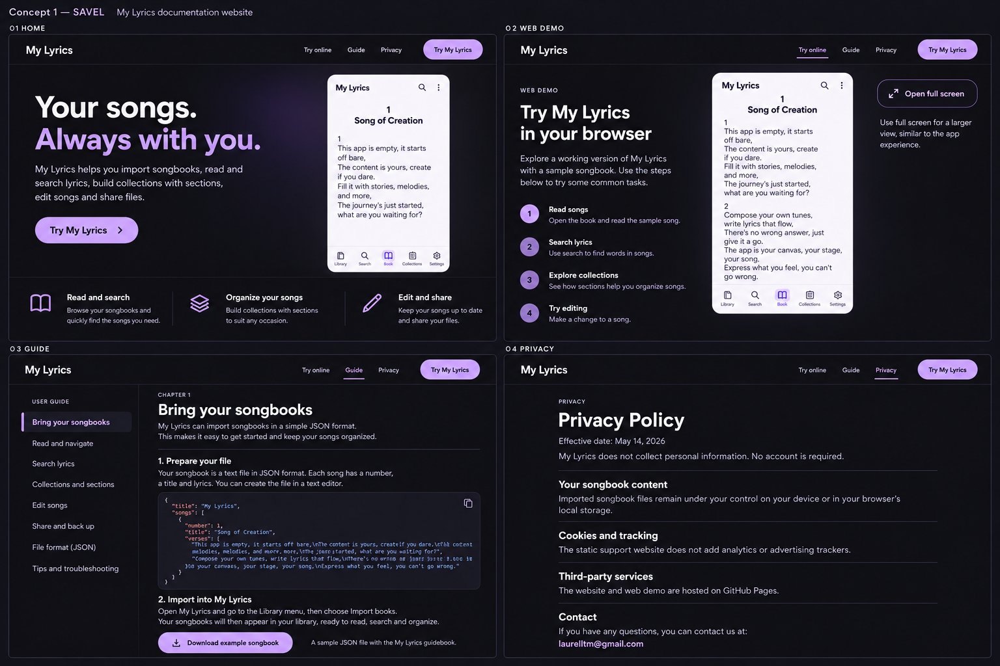
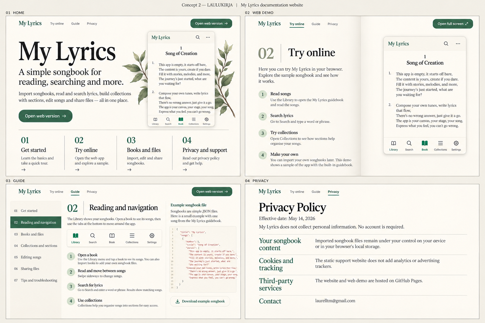
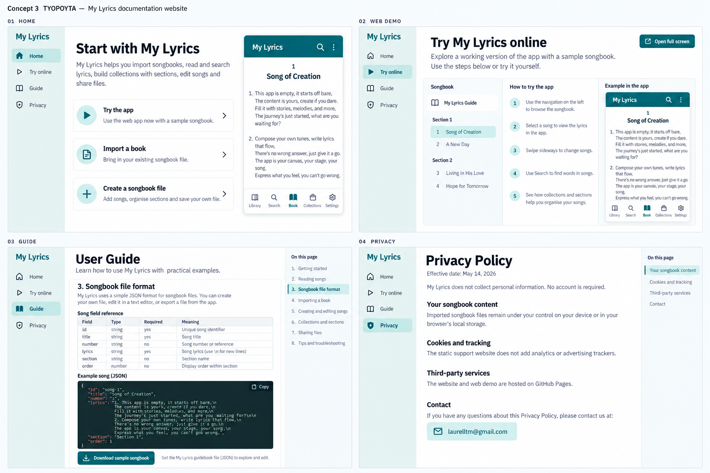
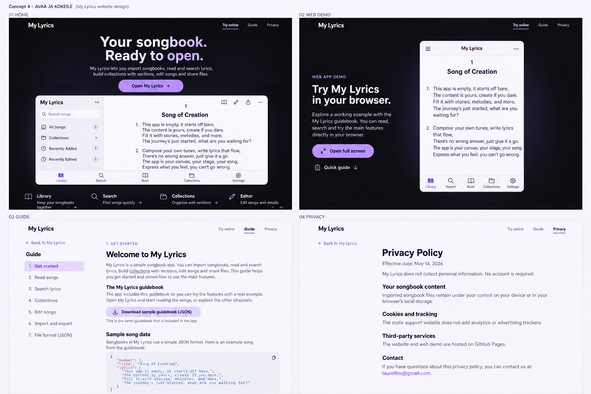
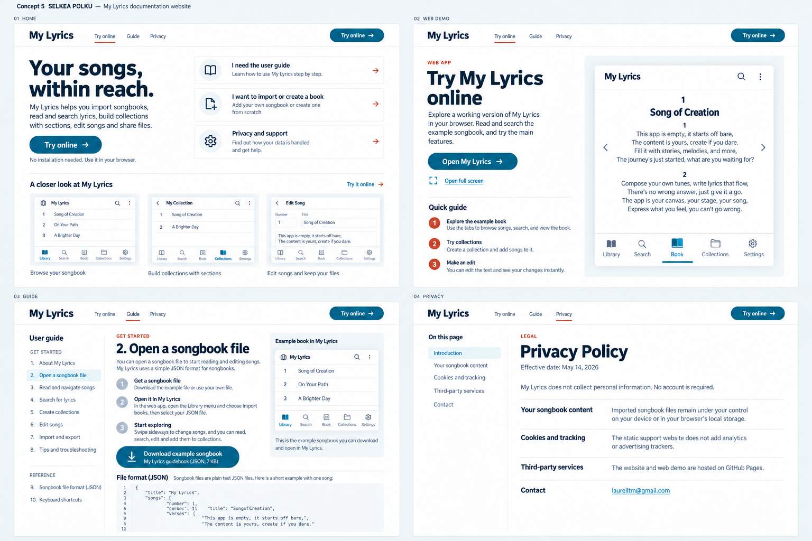

1. Sävel
Tumma, laventeli · sovelluksen sisarsivusto
Avaa kuva täysikokoisena2. Laulukirja
Lämmin paperi · toimitettu julkaisu
Avaa kuva täysikokoisena3. Työpöytä
Petrooli · ohjeet ja kokeilu rinnakkain
Avaa kuva täysikokoisena4. Avaa ja kokeile
Sovellus pääosassa · tumma esittely, vaalea ohje
Avaa kuva täysikokoisena5. Selkeä polku
Vaalea · tehtävä kerrallaan
Avaa kuva täysikokoisena